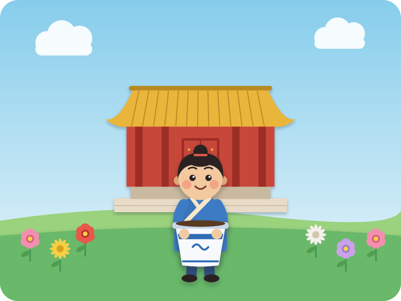
A tale told as Chinese
The Empty Pot
"Story, story — are your ears open?" Kai: "Open!"
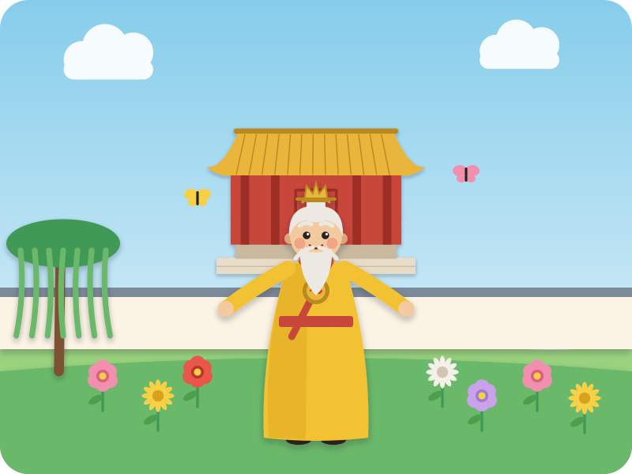
Long ago in China there lived an old emperor who loved flowers more than anything.
Wherever he walked, flowers bloomed — peonies, chrysanthemums, every colour you can think of.
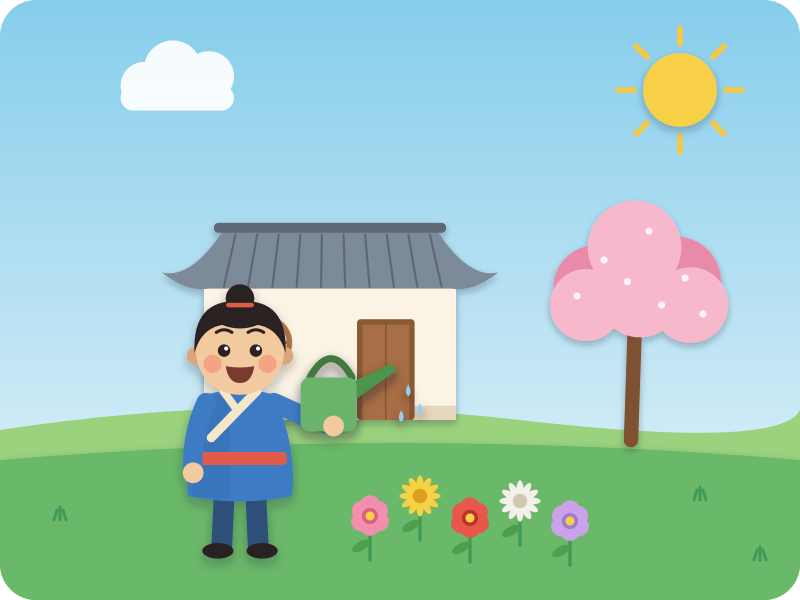
In a little house lived a boy called Ping. Ping loved flowers too.
Whatever he planted grew big and beautiful. He always sang to his seeds: "Grow, little seed, grow!" Kai sings it too
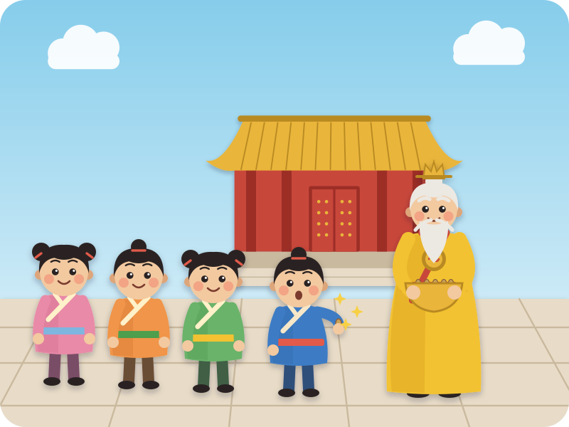
The emperor was very old. Who would be emperor after him?
He gave every child one seed. "Whoever shows me the most beautiful flower in one year," he said, "will be emperor after me!"
Ping held his seed very carefully. Kai cups his hands
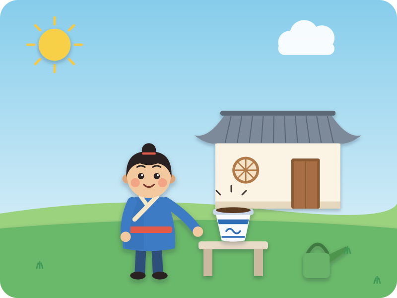
Ping filled a pot with good soil and planted his seed. Pat, pat, pat. Kai pats his knees
He watered it every day. "Grow, little seed, grow!" Kai
But nothing grew.
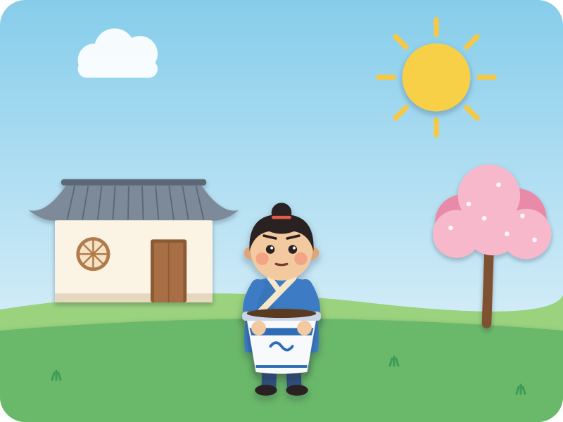
So Ping gave it a bigger pot with rich, dark soil. Pat, pat, pat. He carried it into the sunshine.
He waited one day… two days… three days… Kai counts on his fingers "Grow, little seed, grow!"
Still nothing.
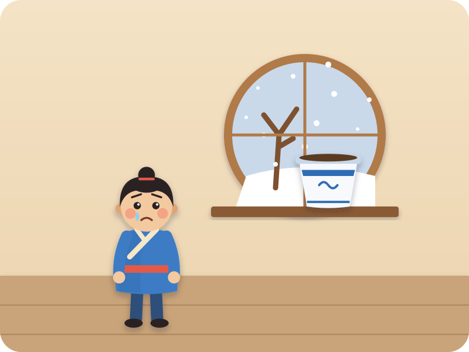
Summer went by. Autumn went by. Then came winter and snow.
And Ping's pot was still empty. "Grow, little seed… please?" Kai says it very softly
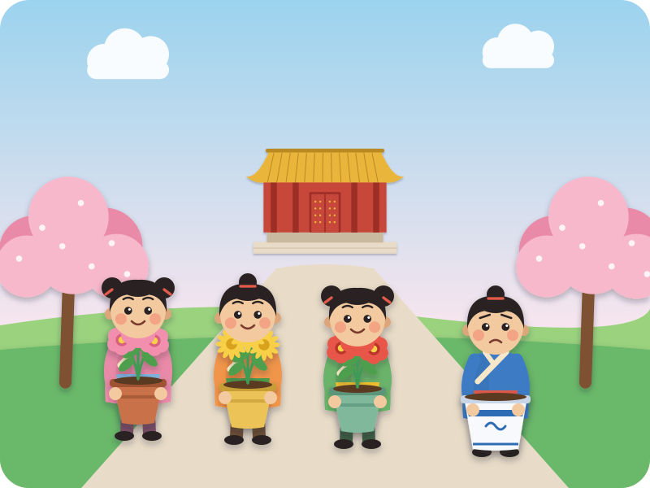
In spring, all the children went to the palace with their flowers — pink ones, yellow ones, red ones, bright and beautiful.
Ping had only his empty pot. He felt so sad he wanted to hide.
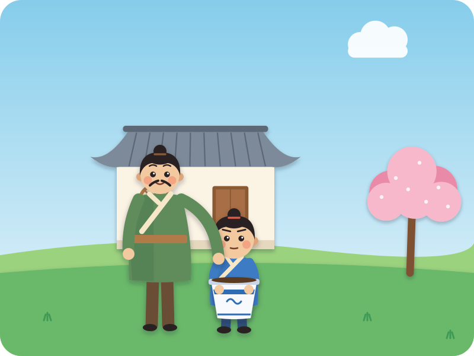
Ping's father put a gentle hand on his shoulder.
"You looked after that seed every single day. Take your pot, and tell the emperor just what happened."
Ping took a big, deep breath. Kai breathes in… and out
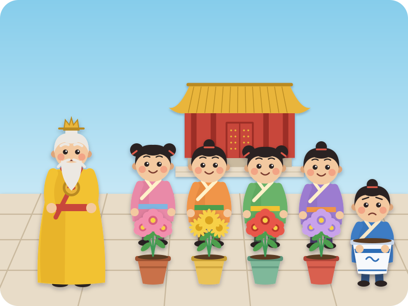
At the palace, the emperor looked at every flower. Kai counts the pots of flowers: one, two, three, four!
They were beautiful. But the emperor did not smile. Not once.
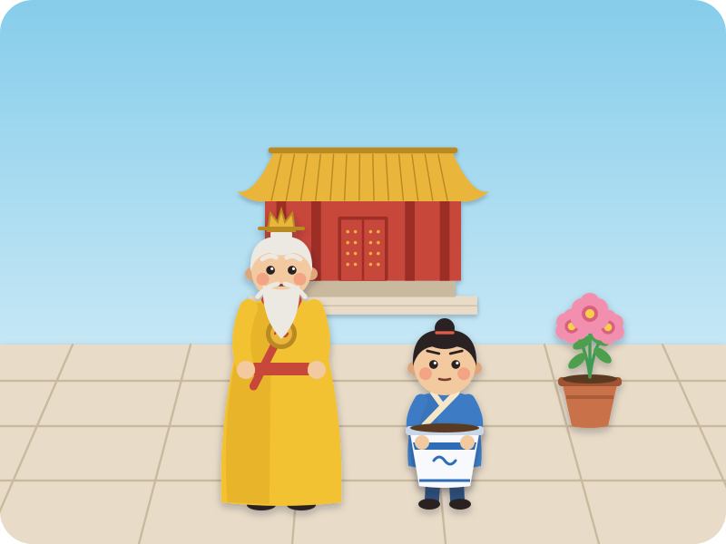
Then he came to Ping. "Why have you brought me an empty pot?"
Ping's tummy felt wobbly, but he told the truth. "My seed never came up — not even a tiny bit. I tried and tried." Kai, in a brave voice
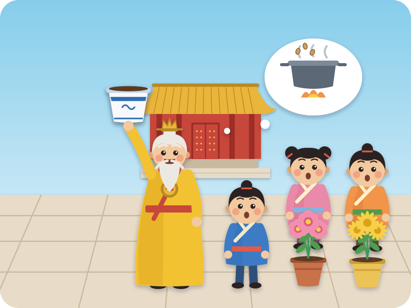
The emperor smiled the biggest smile. He held the empty pot up high. "At last! This is the pot I was hoping for!"
"The seeds I gave you were cooked. Nothing could ever grow from them!" Kai: "Cooked?!"
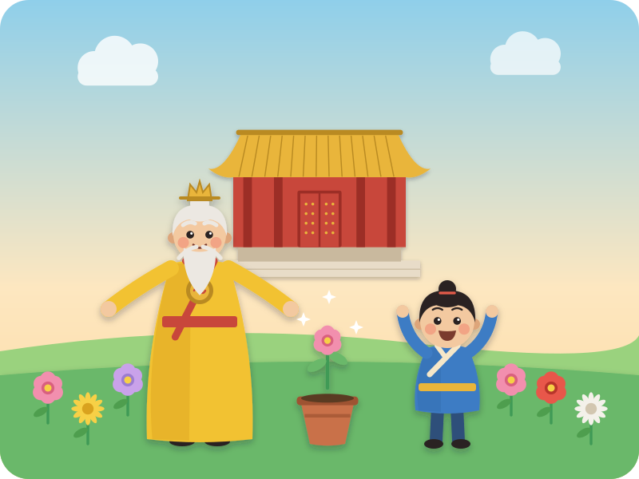
"Ping was brave enough to bring me the truth. He will be emperor after me!"
Then the old emperor gave Ping a real seed. Pat, pat, pat. "Grow, little seed, grow!" Kai
And this time — it did.
The End
"Snip, snap, snout — this tale's told out."
Swipe back to read it again
Driving? Tell it without the page · six beats
The picture book is for home, bedtime, or a passenger. In the car, tell it from memory — bold is Kai's part.
- An old emperor who loves flowers gives every child one seed: whoever grows the most beautiful flower in a year will be emperor after him.
- Ping, who can grow anything, plants his seed — pat, pat, pat — and waters it every day: "Grow, little seed, grow!" Nothing grows.
- A bigger pot, rich soil, sunshine, and lots of waiting — one day, two days, three days — "Grow, little seed, grow!" Still nothing, all through the winter.
- In spring every child carries bright flowers to the palace. Ping's pot is empty, but his father says, "Tell the emperor just what happened." Ping takes a big deep breath and goes.
- The emperor doesn't smile at a single flower — one, two, three, four — until he reaches Ping, who tells the truth in a brave voice: "My seed never came up."
- The emperor smiles: the seeds were cooked! Ping was brave and honest, so he'll be the next emperor — and his real seed grows: "Grow, little seed, grow!"
After the story · car-friendly wondering
"Why couldn't Ping's seed grow, even with all that water and sunshine?"
"The other children had big flowers. Where do you think their flowers came from?"
"Have you ever told the truth when it felt wobbly in your tummy? How did it feel after?"
Where this story comes from
The best-known version of this story is Demi's picture book The Empty Pot (Henry Holt, 1990). Her book gives us the boy Ping, the flower-loving emperor, the contest to grow a flower from his seed, and the cooked seeds. Her book labels it Chinese folklore, but where she first found it is not well documented, and one storytelling note from the University of North Carolina suggests the story may be largely Demi's own invention. We haven't been able to trace an earlier written source or a named collector, so we call it "a tale told as Chinese" rather than credit it to anyone. Versions you meet elsewhere may differ. This retelling is our own, for a 4-year-old, and so are the speeches: Ping's father's words, Ping's answer and the emperor's cry are in our own words. Our additions are the "Grow, little seed, grow!" chant, the pat-pat-pat, the day-counting, the snowy window, the thought bubble of seeds cooking, and the ending where the emperor gives Ping a real seed that grows. Our telling also never says where the other children's flowers came from, so nobody is blamed. The paper-cut pictures are ours too, not Demi's: simple round-faced figures in cross-collared tunics, a red palace with a golden roof, and a blue-and-white pot.